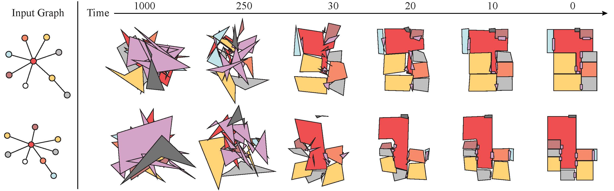

Abstract
The paper presents a novel approach for vectorfloorplan generation via a diffusion model, which denoises 2D coordinates of room/door corners with two inference objectives: 1) a single-step noise as the continuous quantity to precisely invert the continuous forward process; and 2) the final 2D coordinate as the discrete quantity to establish geometric incident relationships such as parallelism, orthogonality, and corner-sharing. Our task is graph-conditioned floorplan generation, a common workflow in floorplan design. We represent a floorplan as 1D polygonal loops, each of which corresponds to a room or a door. Our diffusion model employs a Transformer architecture at the core, which controls the attention masks based on the input graph-constraint and directly generates vector-graphics floorplans via a discrete and continuous denoising process. We have evaluated our approach on RPLAN dataset. The proposed approach makes significant improvements in all the metrics against the state-of-the-art with significant margins, while being capable of generating non-Manhattan structures and controlling the exact number of corners per room.
Code and Data
Please visit the GitHub page of our project for more details.Citation
@article{shabani2022housediffusion,
title={HouseDiffusion: Vector Floorplan Generation via a Diffusion Model with Discrete and Continuous Denoising},
author={Shabani, Mohammad Amin and Hosseini, Sepidehsadat and Furukawa, Yasutaka},
journal={arXiv preprint arXiv:2211.13287},
year={2022}
}